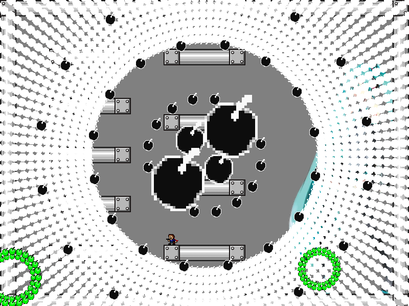
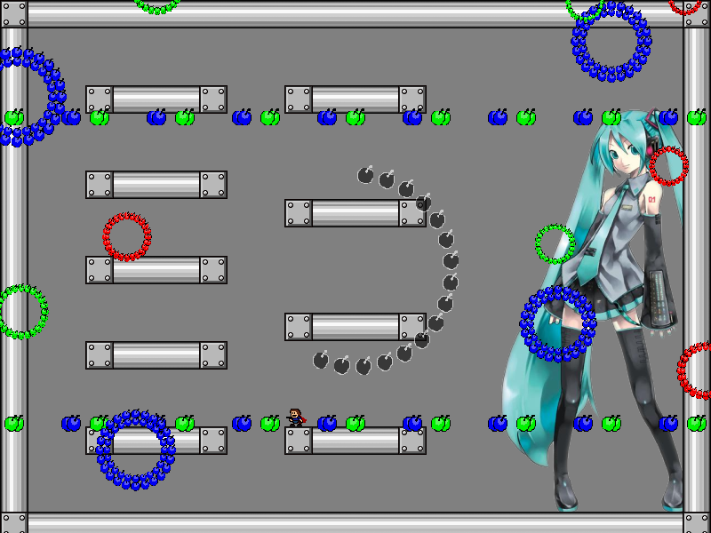
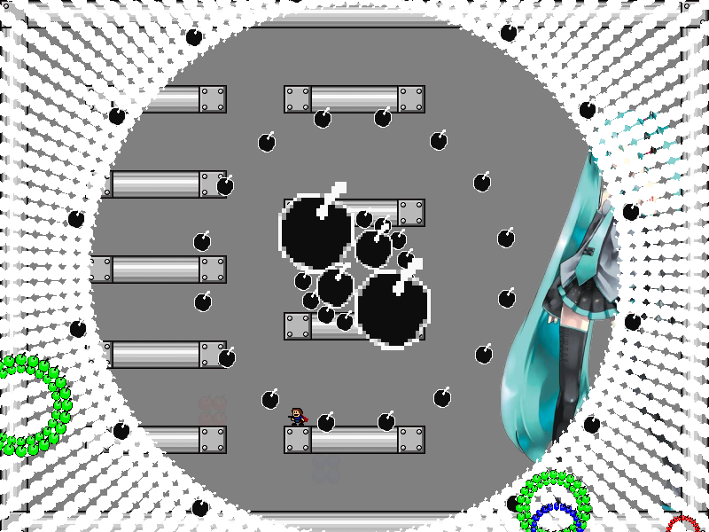
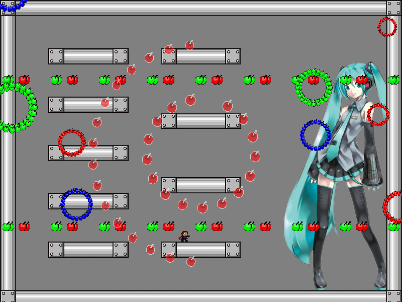
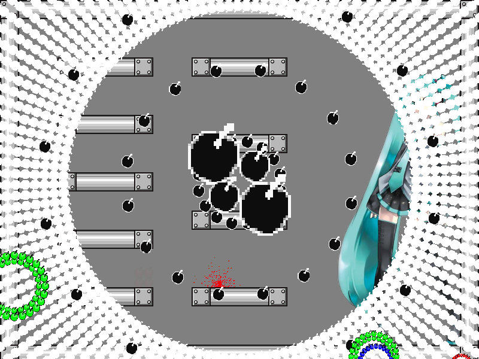

| creator | segment | label | jump |
|---|---|---|---|
| NN | 0:20.70~0:21.60 | P*A/Q | double |
2-2の解答に対応する、角度のみがランダムな弾幕です。
2-2において画面中央を中心として生成される同心円状弾幕の色に関して、これらは各時刻におけるプレイヤーの位置について0:20.70において画面中央を中心として生成される同心円状弾幕に被弾する位置であるかどうかを示しています（fig.2-3.1.a~fig.2-3.1.d）。
具体的には、2-2において同心円状弾幕が黒色を示す位置については被弾しない位置（fig.2-3.1.a, fig.2-3.1.b）、赤色を示す位置については被弾する位置（fig.2-3.2.a, fig.2-3.2.b）をそれぞれ示しています。



